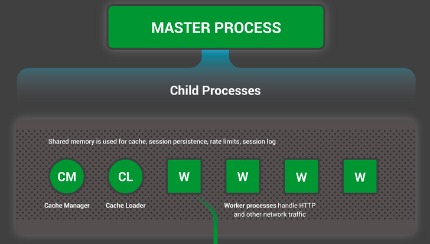

API Gateway (rate limiting, API versioning, authentication)
Nginx Implementation Example
Before Nginx
After Nginx
- The server can get overloaded as number of connections
increase
Load balanced with Nginx, backend can scale independently
- We can spin up multiple servers running on several ports but now
the clients have to be aware of them too.
Backend routing with Nginx
- The endpoints are not secured, and with multiple servers multiple
certificates need to be issued (or copied to each)
Can issue one certificate with Nginx, multiple certificates not
required
Nginx benefits don’t come for free as it is an extra layer and
there is some overhead, that is why Nginx or any reverse proxy has to be
as efficient as possible.
Nginx Layer 4 vs Layer 7
proxying
Layer 4/7 refers to OSI model layers.
In Layer 4 we see TCP/IP stack only nothing about the app, we have
access to
Source IP, Source Port
Destination IP, Destination Port
Simple packet inspection (SYN/TLS hello)
In Layer 7 we see the application, HTTP/ gRPC etc..
We have access to more context
I know where the client is going, which page they are visiting
NGINX can operate in Layer 7 (e.g. http) or Layer 4 (tcp)
Layer 4 proxying is useful when NGINX doesn’t understand the
protocol (MySQL database protocol)
Layer 7 proxying is useful when NGINX want to share backend
connections and cache results
Using stream context it becomes a layer 4 proxy
Using http context it becomes a layer 7 proxy
TLS Termination and TLS
Passthrough
TLS stands for Transport Layer Security
It is a way to establish end-to-end encryption between one
another
Symmetric encryption is used for communication (client/server has
the same key)
Asymmetric encryption is used initially to exchange the symmetric
key (diffie hellman)
Encryption alone, whether symmetric or asymmetric, doesn’t guarantee
the identity of communication parties. A middleman can pose as an
authority, so Certificate Authorities (CAs) and verification methods are
crucial for distinguishing between authorized and non-authorized
entities, as encryption’s primary role is content protection, not
identity validation.
Even if NGINX has TLS (e.g. HTTPS) backend may or may not. For
private server environment HTTP is fine if shielded by TLs at Nginx’s
layer. In this case NGINX terminates TLS, decrypts and sends
unencrypted.
If NGINX is TLS and backend is also TLS ( HTTPS ). NGINX terminates
TLS, decrypts, optionally rewrite headers and then re-encrypt the
content to the backend. This introduces latency so the ciphers have to
be fast and performant.
While NGINX can inspect Layer 7 (L7) data, rewrite headers, and
cache content, it either needs to have its own SSL/TLS certificate or
share the certificate used by the backend server. This certificate is
essential for encrypting and decrypting data between NGINX and the
backend.
Suitable for Load Balancing and Content Modification.
Shared Certificates for a Single Domain.
TLS Passthrough
If the Backend has TLS, NGINX can be used to just to proxy/stream
the packets directly to the backend. In this case Nginx doesn’t respond
to the ‘TLS Hello’ as it is not authorized to terminate TLS. The TLS
handshake is forwarded all the way to the backend just like a tunnel and
back.
There is no caching
There are L4 check only, but more secure as NGINX doesn’t need the
backend certificate.
Preferred for End-to-End Encryption and Enhanced Security.
Appropriate When Content Inspection or Modification Is Not
Required.
One disadvantage is that Nginx cannot share backend connections,
every request will have a new connection and that can be costly.
Nginx Internal Architecture
Nginx has a ‘master process’ that coordinates all other Nginx
processes. It also manages caching, reading it from disk, and refreshing
caches.
The primary focus is on ‘worker processes’, responsible for most
of the work. Worker processes handle connections and requests.

Nginx Master and Worker
Processes
When Nginx is in ‘auto’ mode, worker processes are spawned based
on the number of hardware threads on the server. Hardware threads can
simulate multiple cores (with hyper-threading),
e.g., 4 cores can simulate 8 hardware threads.
NGINX Threading Architecture
When NGINX reverse proxy starts it creates one thread per CPU core
and these worker threads do the heavy lifting. The number of worker
threads are configurable but NGINX recommends one thread per CPU core to
avoid context switching and cache thrashing. In older versions of NGINX
all threads accept connections by competing on the shared listener
socket (by default only one process can listen on IP/port pair). In
recent versions of NGINX this was changed to use socket sharding
(through SO_REUSEPORT socket option) which allows multiple threads to
listen on the same port and the OS will load balance connections on each
accept queue.
Multiple Threads Single Acceptor Architecture
Multiple Threads with Socket Sharding (SO_REUSEPORT)
When a client establishes a TCP connection to Nginx, connections
are initially placed in a Syn queue and then moved to an accept queue.
The kernel manages the queue but it’s allocated by Nginx.
Worker processes retrieve connections from the accept queue.
Worker processes are responsible for request handling. Each worker
process is pinned to a CPU core to minimize context switches as Request
handling involves CPU-intensive tasks.
Some requests are IO bound, requiring reading content from disk,
making upstream network requests or writing to sockets(i.e writing a
response which may also involve encryption). These IO-bound operations
can be slow and cause waits, hence Nginx performs event-driven IO,
allowing the process to perform other tasks during IO wait.
Nginx scales by adding more worker processes to handle incoming
connections. Each worker process can manage multiple connections
simultaneously. Load balancing distributes connections among worker
processes. The number of worker processes depends on server hardware and
usage patterns.
In Nginx, timeouts are settings that determine how long the server
should wait for certain events to occur before considering them as
failures. It is critical to ensure efficient use of resources so you
don’t let a runaway process run for a very long time and consume all the
resources and then the client keeps waiting.
Frontend Timeouts
(when clients talk to Nginx)
client_header_timeout:
Description:client_header_timeout
specifies the maximum time Nginx will wait for a client to send the
request header, including request method, URI, and HTTP headers.
Use Case: It’s valuable in ensuring that clients
send their request headers within an acceptable time frame, preventing
slow or unresponsive clients from tying up server resources.
Benefit: Enhances server performance by managing
slow or misbehaving clients effectively and preventing resource
exhaustion.
Status Code: 408 Request Timeout (if exceeded)
Default Value: 60s
client_body_timeout:
Description: This timeout determines how long Nginx
waits for the client to send the request body, commonly used for HTTP
POST requests that include data.
Use Case: In scenarios where clients submit forms,
upload files, or provide data via POST requests,
client_body_timeout ensures timely receipt of this
data.
Benefit: Prevents connections from remaining open
indefinitely for slow clients, optimizing server resource usage and
responsiveness.
Status Code: 408 Request Timeout (if exceeded)
Default Value: 60s
send_timeout:
Description:send_timeout specifies
the maximum time Nginx waits to send data to the client once the
response has started.
Use Case: In applications like live streaming or
real-time communication, timely data delivery is essential for a smooth
user experience.
Benefit: Ensures that data is sent to clients
promptly, preventing long delays and potential client-side timeouts,
crucial for real-time applications.
Status Code: 408 Request Timeout (if exceeded)
Default Value: 60s
keepalive_timeout:
Description: This timeout defines how long Nginx
keeps a client connection open for potential reuse, allowing multiple
requests over the same connection.
Use Case: In websites serving multiple assets
(HTML, CSS, JavaScript, images) on a single page, reusing connections
reduces latency and improves load times.
Benefit: Reduces connection overhead and improves
performance by reusing connections for multiple requests from the same
client.
Status Code: Not applicable (connection
management)
Default Value: 75s
lingering_timeout:
Description:lingering_timeout
determines how long Nginx keeps a closed (lingering_close)
client connection open to handle late responses. It is used in cases
where Nginx serves cached responses and needs to close the connection
gracefully.
Use Case: Useful for serving cached content and
ensuring that clients receive responses even if the connection is closed
before the server generates the entire response.
Benefit: Provides a better user experience by
allowing clients to receive cached content despite a closed connection,
reducing the need for new connections.
Status Code: Not applicable (connection
management)
Default Value: 5s
resolver_timeout:
Description:resolver_timeout sets the
maximum time Nginx will wait for DNS resolution when proxying requests
to upstream servers.
Use Case: When Nginx acts as a reverse proxy and
needs to resolve the DNS of upstream servers, this timeout ensures that
DNS resolution doesn’t cause delays.
Benefit: Prevents unnecessary delays in request
processing due to slow DNS resolution, ensuring timely delivery of
content.
Status Code: 408 Request Timeout (if exceeded)
Default Value: 30s
Backend Timeouts
(when Nginx talks to backends)
proxy_connect_timeout:
Description:proxy_connect_timeout
specifies the maximum time Nginx waits to establish a connection with a
backend server.
Use Case: In a reverse proxy configuration, it
helps Nginx quickly identify unresponsive backend servers.
Benefit: Ensures that clients are not left waiting
indefinitely for content from a problematic backend, improving
reliability.
Status Code: 502 Bad Gateway (if exceeded)
Default Value: 60s
proxy_send_timeout:
Description: This timeout defines the maximum time
Nginx waits to send data to the backend server after a connection is
established.
Use Case: In applications like e-commerce
platforms, where requests are forwarded to backend systems for order
processing.
Benefit: Prevents bottlenecks caused by slow or
unresponsive backend servers, maintaining responsiveness for clients and
preventing request queuing or timeouts.
Status Code: 502 Bad Gateway (if exceeded)
Default Value: 60s
proxy_read_timeout:
Description: Specifies the maximum time Nginx waits
for a response from the backend server.
Use Case: Content-heavy websites fetching data from
backend databases or applications that rely on various backend
services.
Benefit: Ensures that clients receive timely
responses, preventing unnecessary delays and potential client-side
timeouts due to backend issues.
Status Code: 504 Gateway Timeout (if exceeded)
Default Value: 60s
proxy_next_upstream_timeout:
Description:proxy_next_upstream_timeout sets the maximum time Nginx
waits for a response from the next upstream server in case the current
one fails.
Use Case: In load-balanced configurations, it
allows Nginx to quickly switch to a backup server if the primary one
fails to respond.
Benefit: Improves fault tolerance and availability
by minimizing downtime in case of upstream server failures.
Status Code: 502 Bad Gateway (if exceeded)
Default Value: 0s
keepalive_timeout:
Description: Already discussed in the frontend
section, keepalive_timeout also plays a role on the backend
for reusing connections between Nginx and upstream servers.
Use Case: Helps in maintaining efficient and
persistent connections to backend servers, reducing connection
overhead.
Benefit: Reduces the need to frequently establish
new connections to upstream servers, improving performance and reducing
latency.
Status Code: Not applicable (connection
management)
Default Value: 75s
Configuring these timeouts accurately based on your specific use
cases is vital for optimizing the performance, reliability, and
responsiveness of your Nginx web server or reverse proxy while ensuring
efficient resource management and graceful handling of client and
backend server interactions.
Nginx Configuration
Understanding Nginx Configuration Contexts: - Nginx
configuration is organized into a tree-like structure using curly braces
{} to define contexts. - Contexts group configuration
directives based on their area of concern. - Contexts can be nested,
allowing for inheritance of configurations.
Core Contexts:
Main Context:
The top-level context that affects the entire application.
Configures system user, worker processes, error files, and
more.
Example:
user www-data;
worker_processes auto;
error_log /var/log/nginx/error.log;
Events Context:
Nested within the main context.
Sets global options for handling connections.
Controls connection processing techniques.
Example:
events {
worker_connections 1024;
use epoll;
}
HTTP Context:
Nested within the main context.
The primary context for web server configuration.
Contains directives for handling HTTP or HTTPS connections.
Defines virtual servers for handling specific requests.
Selects a server based on IP/port and host name.
Example:
server {
listen 80;
server_name example.com;
location / {
# Server configuration here
}
}
Location Context:
Nested within server contexts.
Used to handle requests based on the request URI.
Contains directives for specific location-based processing.
Example:
location /static/ {
alias /var/www/static/;
}
Other Contexts (Less Common): -
split_clients, perl, map,
geo, types, charset_map: These
contexts have specific use cases and are used less frequently.
Upstream Context: - Used to define and configure
upstream servers for proxying requests. - Enables load balancing when
proxying requests.
Example:nginx upstream backend { server backend1.example.com; server backend2.example.com; }
If Context: - Provides conditional processing of
directives. - Should be used with caution, as it can lead to unexpected
results. - Typically used with return and
rewrite directives.
Example:nginx if ($request_uri ~* "admin") { return 403; }
Limit_except Context: - Restricts the use of certain
HTTP methods within a location context. - Useful for controlling access
to specific methods based on client characteristics.
Example:nginx location /restricted-write { limit_except GET HEAD { allow 192.168.1.1/24; deny all; } }
General Rules for Contexts: - Apply directives in
the highest context available to avoid repetition. - Utilize multiple
sibling contexts instead of using if logic for processing.
- Favor purpose-made directives over if for better
performance and reliability.